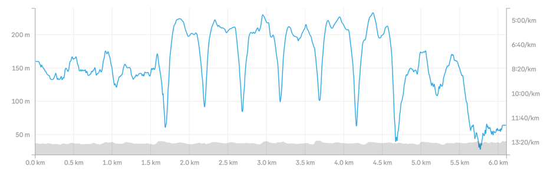

I'm training for my 5k that's in 3 weeks.
My goal is to run it in under 30 minutes.
I used the Runnna app to get a training plan. I've committed to 3 runs per week, but this time I want to do different kinds of runs.
My very first run was an interval run. I had done run-walk-repeat before, but I didn't know that an interval run is supposed to be high pace and intensity. So this time I intended to do a proper interval run.
The app asked to do a 1.6km easy run, followed by 6x 400m fast + 60s walking, and finally a 1.4km slow run.

I did the easy run with an average 8:15 pace and the intervals with an average of 6:00 pace. I was running as fast as 5:30, which I hadn't done before unless I was sprinting.
Only in the end, I couldn't do the continuous slow run and had to walk the last 500m.
I was spent.